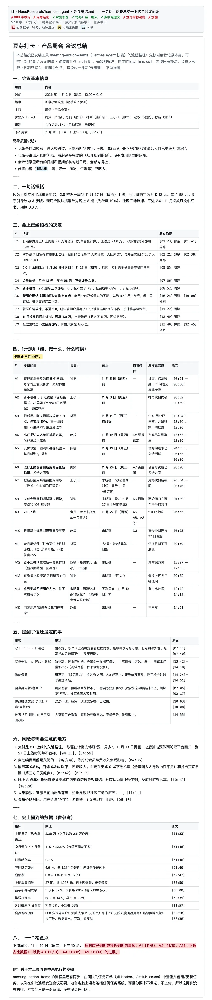
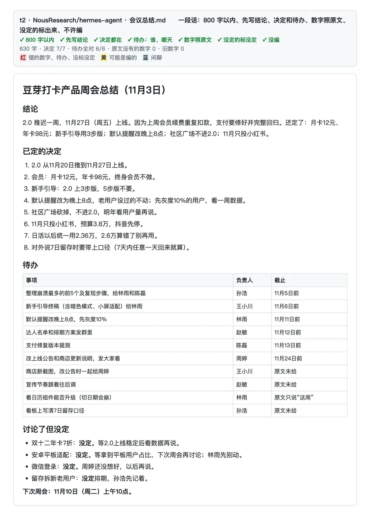

NousResearch/hermes-agent: meeting summary test
Test of 2026-11-08. Installed from its README in a throwaway sandbox, then used by Claude Code (Claude Opus 5.5) to summarise the same made-up meeting record, an automatic transcript of a product team's weekly meeting of about 5,000 字, from two requests in the person's words. Whenever the build stopped short of a finished summary, it got the same reply. A separate tester session, with no tool loaded, checked the summary against 7 checks fixed before the runs: six scripted against an answer key written with the record, and one, anything the record does not support, read by the tester sentence by sentence. Everything in the record is made up. All results · The meeting record · The checklist · The answer key
Install: installed the meeting-action-items skill (SKILL.md only) to ~/.claude/skills/meeting-action-items via `mkdir -p ~/.claude/skills && cp -r ~/src/skills/productivity/meeting-action-items ~/.claude/skills/meeting-action-items` (repo commit e075441241b8)
Why it was in the test (our note before the run): 星最多的 agent 仓库里的会议 skill，防编规则写得最硬：「没定的提议不能写成决定」「截止日期没说就写 unresolved，绝不编」。它是写给 Hermes 的（里面提到 read_file 等 Hermes 工具），看搬到 Claude Code 里还好不好用。仓库 1.4 GB，只稀疏克隆这一个文件夹。
One line
The request, word for word: 「帮我总结一下这个会议记录。」
3 of 7 checks passed. 2,781 字, in 会议总结.md. Built in 1.1 minutes; it stopped to ask 0 time(s); how it ended: finished. Usage at API prices: $0.36 (1.6 times the run with no tool on this request).
| Check | Verdict | What decided it |
|---|---|---|
| At most 800 字 | fail | 2781 字（上限 800） |
| Opens with what was decided | fail | 开头 150 字里写到 0 条决定（无）；开头：记录是自动转写、没人校对过，可能有听错的字。例如 [03:50] 处"密等"随即被说话人自己更正为"幂等"。 记录带说话人和时间点，看起来是完整的（从开场到散会）。没有发现明显的缺段。 会议记录里所有的日期和星期都核对过日历，全部对得上。… |
| All 7 decisions | pass | 7/7 条决定写到了 |
| All 6 tasks, each with its owner and due date | pass | 6/6 条待办负责人和截止日期都对 |
| Every figure as the record says it | pass | 187 个数字，0 个原文里没有；旧数字当成现在的 0 处 |
| The 3 open points marked not decided | fail | 2/3 件没定的事写到并标了没定；U1 没标没定：届时应已到期或接近到期的事项：A1（11/5）、A2（11/6）、A14（平板占比数据），以及 A3（11/11）、A4（11/12）、A5（11/13）的进展。 |
| Nothing the record does not support (the tester) | fail | 7 statement(s) the record does not support, listed below |
What the tester found the record does not support
A9 | **2.0 上线** | 全员（会上未指定单一负责人） | **11 月 27 日（周五）** | A5、A8、A2 等 | 2.0 已上线 | `[05:05]`
The launch date is a decision (D1), not a task anyone was given. The record assigns no owner, and '全员' and the prerequisite chain 'A5、A8、A2 等' are the summary's own.A8 | 支付**完整回归测试至少两轮**，安卓和 iOS 都要过 | 孙浩 | 未明确（需在 11 月 27 日上线前完成） | A5 提测
At [04:59] 孙浩 only said that payment needs at least two full regression rounds, as a reason 11/20 is too tight. Nobody assigned this task, and the record gives no due date. The '27 日上线前' deadline is inferred.A7 | 把新版**应用商店截图**给周婷（换掉 1.0 时期的旧截图） | 王小川 | 未明确（"改公告的时候一起给"，即 A6 之前）
The record only says '改公告的时候一起给你' ([05:40]). The due date 'A6 之前' (that is, before 11/24) is the summary's inference.A6 | 改好**上线公告和应用商店更新说明**，发给大家看 | 周婷 | **11 月 24 日（周二）前** | A7 新截图
The record does not make 周婷's announcement depend on 王小川's screenshots. The prerequisite 'A7 新截图' is added.**支付是 2.0 上线的关键路径。** 陈磊估计彻底修好"要一周多"，11 月 13 日提测，之后孙浩要做两轮双平台回归，到 27 日上线时间并不宽裕。
Nobody in the meeting calls payment the critical path or says the 27th schedule is tight. That assessment is the summary's own. The record only says the 20th was too tight.**自动续费目前是关闭的**（临时方案），修好前会员续费收入会受影响。
The record says auto-renewal was turned off as a temporary fix ([04:35]). It says nothing about renewal revenue being affected.主要在安卓 9 以下老机型（分享图太大导致内存不足）和打卡页切日期（第三方日历组件）。
陈磊 said only '有一些' of the old-device crashes are low memory and that he 'remembers' the share image being large. The record does not state the share image as the cause of the old-device crashes.
Small talk it kept: 咖啡机
Where the tester doubted how the script read it
Some of these led to the script fixes listed in RESULTS.md; every verdict on this page comes from the fixed script.
- Every figure as the record says it: All 71 'extra' figures are [mm:ss] source timestamps the summary cites (e.g. `[01:23]`, `[05:05]`, `[14:55]`). They are the record's own timestamps [00:01:23] etc. with the hours dropped, not meeting figures. Every one corresponds to a real line in the record. The kit lists no other non-matching figure, so the fail rests only on the timestamps.
- The 3 open points marked not decided: The unmarked mention in 八 refers to the follow-up of collecting the tablet user share (A14), not to whether tablet adaptation is decided. It does not present the open point as decided. The point itself is marked 暂不定 in 五, and the A14 row says 供下次周会讨论. A reviewer may judge this mention does not need its own 没定 mark.
The tester's notes
Written in Chinese, Markdown with several wide tables (an action table with 7 columns) that render fine but are long. The document is about 2.8k 字, a full set of minutes rather than a summary. It opens with a note about the tool ('meeting-action-items（Hermes Agent 技能）'), a meeting-info table and a 记录质量说明 list before the one-line conclusion in section 二. It adds items beyond the meeting's 7 decisions: D1 data correction, D2 retention wording and D9 no price in ad material are listed as decisions. Loose asks (日历组件, 素材包, 看板口径, 宣传节奏, 截图, 回复用户) are listed as action items A7, A10–A13 and A15, mostly with due '未明确', which a reader may take as assigned tasks. The closing 附 section speaks to the requester about unexecuted tool steps and '你要求不发送、不上传' (from the run instructions, not the meeting). Names are spelt correctly. Every citation uses a shortened [mm:ss] timestamp (the record uses [hh:mm:ss]).
The summary with the script's marks
The picture shown in our video. Red: a figure the record does not say, an old figure given as current, a task with the wrong owner or date, an open point not marked open. Yellow: lines the script flagged for the tester to read (candidates, not verdicts; the tester's list above is the verdict). Blue: small talk.

The summary as delivered (会议总结.md)
# 豆芽打卡 · 产品周会 会议总结 > 本总结按已安装工具 **meeting-action-items**（Hermes Agent 技能）的流程整理：先核对会议记录本身，再把"已定的事 / 没定的事 / 谁要做什么"分开列出，每条都标注了原文时间点 `[mm:ss]`，方便回头核对。负责人和截止日期只写会上明确说过的，没说的一律写"未明确"，不做推测。 ## 一、会议基本信息 | 项目 | 内容 | |---|---| | 时间 | 2026 年 11 月 3 日（周二）10:00–10:16 | | 地点 | 3 楼小会议室（赵敏线上参加） | | 主持 | 周婷（产品负责人） | | 参会人（6 人） | 周婷（产品）、陈磊（后端）、林雨（客户端）、王小川（设计）、赵敏（运营）、孙浩（测试） | | 来源 | `会议记录.txt`（自动转写，**未校对**） | | 下次周会 | 11 月 10 日（周二）上午 10 点 `[15:23]` | **记录质量说明：** - 记录是自动转写、没人校对过，可能有听错的字。例如 `[03:50]` 处"密等"随即被说话人自己更正为"幂等"。 - 记录带说话人和时间点，看起来是完整的（从开场到散会）。没有发现明显的缺段。 - 会议记录里所有的日期和星期都核对过日历，全部对得上。 - 闲聊内容（咖啡机、猫、双十一购物、午饭等）已略去。 --- ## 二、一句话概括 因为上周支付出现重复扣款，**2.0 推迟一周到 11 月 27 日（周五）上线**；会员价格定为**月卡 12 元、年卡 98 元**；新手引导改为 **3 步版**；新用户默认提醒改为**晚上 8 点**（先灰度 10%）；**社区广场砍掉**、不进 2.0；11 月投放**只投小红书，预算 3.8 万**。 --- ## 三、会上已经拍板的决定 | # | 决定 | 原文依据 | |---|---|---| | D1 | 日活数据更正：上周的 2.6 万算错了（安卓重复计算），正确是 **2.36 万**。以后对内对外都用 2.36 万。 | `[01:23]` 孙浩、`[01:41]` 周婷 | | D2 | 对外说 7 日留存时**要带上口径**（我们的口径是"7 天内任意一天回来过"，与外面常见的"第 7 天回来"不同）。 | `[02:21]` 赵敏、`[02:38]` 周婷 | | D3 | **2.0 上线日期从 11 月 20 日推迟到 11 月 27 日（周五）**。原因：支付需要修复并完整回归测试。 | `[05:05]` 周婷 | | D4 | **会员价格：月卡 12 元，年卡 98 元；不做终身会员。** | `[07:06]` 周婷 | | D5 | **新手引导：2.0 直接上 3 步版**，5 步版不要了（3 步版完成率 68%，5 步版 52%）。 | `[08:52]` 周婷 | | D6 | **新用户默认提醒时间改为晚上 8 点**；老用户自己设置过的不动。先给 10% 用户灰度，看一周数据。推送文案这次不改。 | `[10:24]` 周婷、`[10:08]` 林雨 | | D7 | **社区广场砍掉，不进 2.0**，明年看用户量再说；"只读精选页"也先不做。设计稿存档保留。 | `[11:22]` 周婷 | | D8 | **11 月投放只投小红书，预算 3.8 万，抖音先停**（原方案 5 万、两边各半）。 | `[12:49]` 周婷 | | D9 | 投放素材里**不放会员价格**，价格只放在 App 里。 | `[12:40]` 林雨、`[12:45]` 赵敏 | --- ## 四、行动项（谁、做什么、什么时候） 按截止日期排序。 | # | 要做的事 | 负责人 | 截止 | 前置条件 | 怎样算完成 | 原文 | |---|---|---|---|---|---|---| | A1 | 整理崩溃最多的**前 5 个问题**，每个写上复现步骤，交给林雨和陈磊 | 孙浩 | **11 月 5 日（周四）前** | — | 林雨、陈磊收到 5 个问题及复现步骤 | `[03:21]`–`[03:30]` | | A2 | 新手引导 3 步版**终稿**（含暗色模式、小屏如 iPhone SE 的适配），交给林雨 | 王小川 | **11 月 6 日（周五）前** | — | 林雨收到终稿 | `[08:52]`–`[09:09]` | | A3 | 把新用户默认提醒改成晚上 8 点，**先灰度 10%**，看一周数据；灰度期间盯推送到达率 | 林雨 | **11 月 11 日（周三）前**改好 | — | 10% 用户已生效，开始收集一周数据 | `[10:24]`–`[10:36]`、`[10:20]` | | A4 | 小红书**达人名单和排期方案**，发群里给大家看 | 赵敏 | **11 月 12 日（周四）前** | D8 预算已定 | 方案已发到群里 | `[13:03]`–`[13:09]` | | A5 | 支付修复（回调加**幂等校验** + 每日**对账**），**提测** | 陈磊 | **11 月 13 日（周五）前** | — | 修好的版本已交给测试 | `[04:35]`、`[05:05]`–`[05:19]` | | A6 | 改好**上线公告和应用商店更新说明**，发给大家看 | 周婷 | **11 月 24 日（周二）前** | A7 新截图 | 公告与说明已发给大家 | `[05:28]` | | A7 | 把新版**应用商店截图**给周婷（换掉 1.0 时期的旧截图） | 王小川 | 未明确（"改公告的时候一起给"，即 A6 之前） | — | 周婷收到新截图 | `[05:34]`–`[05:40]` | | A8 | 支付**完整回归测试至少两轮**，安卓和 iOS 都要过 | 孙浩 | 未明确（需在 11 月 27 日上线前完成） | A5 提测 | 两轮回归在两个平台都通过 | `[04:59]` | | A9 | **2.0 上线** | 全员（会上未指定单一负责人） | **11 月 27 日（周五）** | A5、A8、A2 等 | 2.0 已上线 | `[05:05]` | | A10 | 根据新上线日期**调整宣传节奏** | 赵敏 | 未明确 | D3 | 宣传排期已按 27 日调整 | `[05:23]` | | A11 | 查日历组件（打卡页切换日期必崩），能升级就升级，不能就自己改 | 林雨 | "这周"（未给具体日期） | — | 切换日期不再崩溃 | `[02:59]` | | A12 | 给小红书博主准备一套素材包（新界面截图、图标等） | 赵敏（提需求）、王小川（出图） | 未明确 | — | 素材包交付 | `[12:27]`–`[12:33]` | | A13 | 在看板上写清楚 7 日留存的口径 | 孙浩 | 未明确（"回头"） | — | 看板上可见口径说明 | `[02:32]` | | A14 | 拿到**安卓平板用户占比**，供下次周会讨论 | **未明确**（周婷让林雨"先别动"，但没指定谁去拉数据） | 下次周会（11 月 10 日）前 | — | 有占比数据 | `[13:42]`–`[14:18]` | | A15 | 回复用户"微信登录我们在考虑" | 赵敏 | 未明确 | — | 已回复 | `[14:51]` | --- ## 五、提到了但**还没定**的事 | 事项 | 现状 | 原文 | |---|---|---| | 双十二年卡 7 折活动 | **暂不定**。等 2.0 上线稳定后看数据再说。赵敏可以先想方案，但**先别对外说**。陈磊担心系统撑不住，需要压测。 | `[07:11]`–`[07:40]` | | 安卓平板（及 iPad）适配 | **暂不定**。林雨先别动，等拿到平板用户占比，下次周会再讨论。设计、测试工作量都不小（测试目前一台平板都没有）。 | `[13:42]`–`[14:18]` | | 微信登录 | **暂不定**，"以后再说"。接入约 2 周，2.0 赶不上；账号体系要改、换手机合并账号要想清楚。 | `[14:24]`–`[14:51]` | | 留存拆分新/老用户 | 周婷想看，但看板目前拆不了，需要陈磊加字段；孙浩说这周可能排不上，周婷说"不急"。**没定负责人和时间。** | `[02:05]`–`[02:17]` | | 修改推送文案（"该打卡啦"像闹钟） | 这次不改，避免一次改太多看不出效果。 | `[10:03]`–`[10:08]` | | 参考「习惯熊」的日历视图改版 | 大家有空去看看，有想法在群里说。不是任务，没有截止。 | `[14:55]` | --- ## 六、风险与需要注意的地方 1. **支付是 2.0 上线的关键路径。** 陈磊估计彻底修好"要一周多"，11 月 13 日提测，之后孙浩要做两轮双平台回归，到 27 日上线时间并不宽裕。`[04:35]`、`[04:59]` 2. **自动续费目前是关闭的**（临时方案），修好前会员续费收入会受影响。`[04:35]` 3. **崩溃率 0.8%，目标 0.3% 以下**，差距较大。主要在安卓 9 以下老机型（分享图太大导致内存不足）和打卡页切日期（第三方日历组件）。`[02:42]`–`[03:17]` 4. **晚上 8 点集中推送**可能被安卓厂商通道限流导致延迟；林雨认为量小碰不到，灰度时盯到达率。`[10:12]`–`[10:20]` 5. **人手紧张**：客服目前由赵敏兼着，这也是砍掉社区广场的原因之一。`[11:11]` 6. **会员价格对比**：用户会拿我们和「习惯熊」（10 元/月）比较。`[06:10]` --- ## 七、会上提到的数据（供参考） | 指标 | 数值 | 原文 | |---|---|---| | 上周日活（已去重更正） | 2.36 万（之前说的 2.6 万作废） | `[01:23]` | | 次日留存 / 7 日留存 | 41% / 23.5%（与前两周差不多） | `[01:46]` | | 付费转化率 | 2.7% | `[01:46]` | | 应用商店评分 | 4.6 分，共 1,284 条评价；差评最多是闪退 | `[01:46]` | | 崩溃率 | 0.8%（目标 0.3% 以下） | `[02:42]` | | 上周重复扣款 | 37 笔、共 1,036 元，已全部退款并电话道歉 | `[03:50]` | | 新手引导完成率 | 5 步版 52%，3 步版 68%（各 2,000 多人） | `[08:00]` | | 推送打开率 | 晚 8 点 14%，早 9 点 8.5% | `[09:39]` | | 9 月渠道 7 日留存 | 抖音 9%，小红书 26% | `[11:57]` | | 会员价格调研 | 300 多位老用户；多数认为 15 元偏贵；年卡 98 元接受度明显更高；最想要的权益：去广告、数据导出，其次主题皮肤 | `[06:10]`–`[06:38]` | --- ## 八、下一个检查点 **下次周会：11 月 10 日（周二）上午 10 点。** 届时应已到期或接近到期的事项：A1（11/5）、A2（11/6）、A14（平板占比数据），以及 A3（11/11）、A4（11/12）、A5（11/13）的进展。 --- ### 附：关于本工具流程中未执行的步骤 meeting-action-items 的流程里还有两步：在团队的任务系统（如 Notion、GitHub Issues）中查重并创建/更新任务，以及在你批准后发送会议纪要。这台电脑上**没有连接任何任务系统**，而且你要求不发送、不上传，所以这两步**没有执行**。本文件只是一份草稿，没有发给任何人。
Where it stopped, and got the reply 「我不懂这些，你按你推荐的来，继续做。」
- It did not stop to ask.
One paragraph
The request, word for word: 「帮我把这个会议记录整理成一份总结，发给没来开会的同事看。全文 800 字以内。第一段先写结论：这次会最后定了什么。然后列出所有拍板的决定，再列出所有待办，每一条写清楚谁负责、哪天之前做完。数字一律照原文写，不要改，也不要自己换算。讨论了但没定下来的事单独列出来，标明“没定”，不能写成已经定了。原文里没有的东西一个字都别编，包括负责人和截止日期。」
7 of 7 checks passed. 630 字, in 会议总结.md. Built in 1.1 minutes; it stopped to ask 0 time(s); how it ended: finished. Usage at API prices: $0.36 (1.3 times the run with no tool on this request).
| Check | Verdict | What decided it |
|---|---|---|
| At most 800 字 | pass | 630 字（上限 800） |
| Opens with what was decided | pass | 开头 150 字里写到 6 条决定（D1、D2、D4、D5、D6、D7）；开头：2.0 推迟一周，11月27日（周五）上线。因为上周会员续费重复扣款，支付要修好并完整回归。还定了：月卡12元、年卡98元；新手引导用3步版；默认提醒改晚上8点；社区广场不进2.0；11月只投小红书。 |
| All 7 decisions | pass | 7/7 条决定写到了 |
| All 6 tasks, each with its owner and due date | pass | 6/6 条待办负责人和截止日期都对 |
| Every figure as the record says it | pass | 41 个数字，0 个原文里没有；旧数字当成现在的 0 处 |
| The 3 open points marked not decided | pass | 3/3 件没定的事写到并标了没定 |
| Nothing the record does not support (the tester) | pass | None found |
What the tester found the record does not support
- Nothing.
The tester's notes
Clean Markdown, Chinese throughout, table renders fine, names spelt correctly. The 待办 table has 10 rows: the record's 6 tasks plus 4 things people offered to do themselves (soft asks in the key: S2 口径, S3 日历组件, S4 宣传节奏, S5 截图). Each of these is traceable to the record and marked 「原文未给」/「原文只说“这周”」 for the due date, so not invented, but a reader may take them as assigned tasks. The 已定的决定 list has 8 items: items 1–6 cover the key's 7 decisions (price and 终身会员 are merged in item 2), and items 7 (日活 2.36万) and 8 (7日留存口径) are two more instructions 周婷 gave, both supported by the record. The open points also include a fourth item (留存拆新老用户), which is supported by the record.
The summary with the script's marks
The picture shown in our video. Red: a figure the record does not say, an old figure given as current, a task with the wrong owner or date, an open point not marked open. Yellow: lines the script flagged for the tester to read (candidates, not verdicts; the tester's list above is the verdict). Blue: small talk.

The summary as delivered (会议总结.md)
# 豆芽打卡产品周会总结（11月3日） ## 结论 2.0 推迟一周，11月27日（周五）上线。因为上周会员续费重复扣款，支付要修好并完整回归。还定了：月卡12元、年卡98元；新手引导用3步版；默认提醒改晚上8点；社区广场不进2.0；11月只投小红书。 ## 已定的决定 1. 2.0 从11月20日推到11月27日上线。 2. 会员：月卡12元，年卡98元，终身会员不做。 3. 新手引导：2.0 上3步版，5步版不要。 4. 默认提醒改为晚上8点，老用户设过的不动；先灰度10%的用户，看一周数据。 5. 社区广场砍掉，不进2.0，明年看用户量再说。 6. 11月只投小红书，预算3.8万，抖音先停。 7. 日活以后统一用2.36万，2.6万算错了别再用。 8. 对外说7日留存时要带上口径（7天内任意一天回来就算）。 ## 待办 | 事项 | 负责人 | 截止 | |---|---|---| | 整理崩溃最多的前5个及复现步骤，给林雨和陈磊 | 孙浩 | 11月5日前 | | 新手引导终稿（含暗色模式、小屏适配）给林雨 | 王小川 | 11月6日前 | | 默认提醒改晚上8点，先灰度10% | 林雨 | 11月11日前 | | 达人名单和排期方案发群里 | 赵敏 | 11月12日前 | | 支付修复版本提测 | 陈磊 | 11月13日前 | | 改上线公告和商店更新说明，发大家看 | 周婷 | 11月24日前 | | 商店新截图，改公告时一起给周婷 | 王小川 | 原文未给 | | 宣传节奏跟着往后调 | 赵敏 | 原文未给 | | 看日历组件能否升级（切日期会崩） | 林雨 | 原文只说“这周” | | 看板上写清7日留存口径 | 孙浩 | 原文未给 | ## 讨论了但没定 - 双十二年卡7折：**没定**。等2.0上线稳定后看数据再说。 - 安卓平板适配：**没定**。等拿到平板用户占比，下次周会再讨论；林雨先别动。 - 微信登录：**没定**。周婷还没想好，以后再说。 - 留存拆新老用户：**没定**排期，孙浩先记着。 **下次周会：11月10日（周二）上午10点。**
Where it stopped, and got the reply 「我不懂这些，你按你推荐的来，继续做。」
- It did not stop to ask.